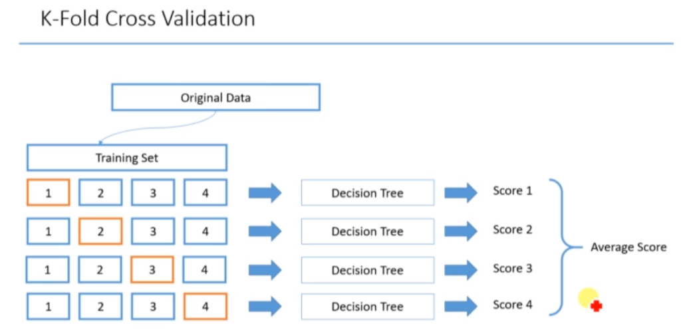
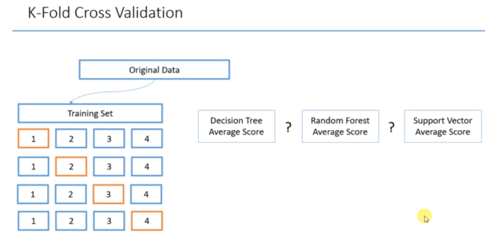
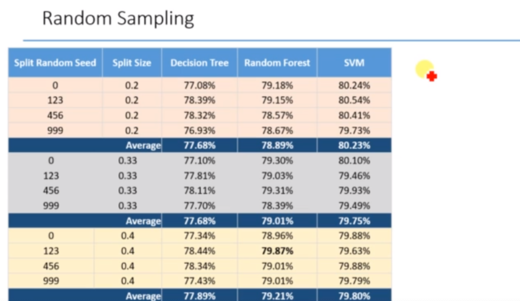

Cross Validations¶
The process of creating different samples for training and testing is Cross Validation.
How cross validations works?
  
Statement of the Problem- Predict whether income exceeds $50K/yr based on census data. OR To determine whether a person makes over 50K a year or not.
To download the data, Please follow the link(https://archive.ics.uci.edu/ml/datasets/adult)
#Compare multiple Classifiers for diffrent train and test values
#import libraries
import pandas as pd
#Read dataset
data=pd.read_csv('04+-+decisiontreeAdultIncome.csv')
data
| age | wc | education | marital status | race | gender | hours per week | IncomeClass | |
|---|---|---|---|---|---|---|---|---|
| 0 | 38 | Private | HS-grad | Divorced | White | Male | 40 | <=50K |
| 1 | 28 | Private | Bachelors | Married | Black | Female | 40 | <=50K |
| 2 | 37 | Private | Masters | Married | White | Female | 40 | <=50K |
| 3 | 31 | Private | Masters | Never-married | White | Female | 50 | >50K |
| 4 | 42 | Private | Bachelors | Married | White | Male | 40 | >50K |
| ... | ... | ... | ... | ... | ... | ... | ... | ... |
| 19782 | 53 | Private | Masters | Married | White | Male | 40 | >50K |
| 19783 | 22 | Private | Some-college | Never-married | White | Male | 40 | <=50K |
| 19784 | 40 | Private | HS-grad | Married | White | Male | 40 | >50K |
| 19785 | 58 | Private | HS-grad | Widowed | White | Female | 40 | <=50K |
| 19786 | 22 | Private | HS-grad | Never-married | White | Male | 20 | <=50K |
19787 rows × 8 columns
Description about the data set and features
age: continuous.
workclass: Private, Self-emp-not-inc, Self-emp-inc, Federal-gov, Local-gov, State-gov, Without-pay, Never-worked.
fnlwgt: continuous.
education: Bachelors, Some-college, 11th, HS-grad, Prof-school, Assoc-acdm, Assoc-voc, 9th, 7th-8th, 12th, Masters, 1st-4th, 10th, Doctorate, 5th-6th, Preschool.
education-num: continuous.
marital-status: Married-civ-spouse, Divorced, Never-married, Separated, Widowed, Married-spouse-absent, Married-AF-spouse.
occupation: Tech-support, Craft-repair, Other-service, Sales, Exec-managerial, Prof-specialty, Handlers-cleaners, Machine-op-inspct, Adm-clerical, Farming-fishing, Transport-moving, Priv-house-serv, Protective-serv, Armed-Forces. relationship: Wife, Own-child, Husband, Not-in-family, Other-relative, Unmarried.
race: White, Asian-Pac-Islander, Amer-Indian-Eskimo, Other, Black.
sex: Female, Male.
capital-gain: continuous.
capital-loss: continuous.
hours-per-week: continuous.
native-country: United-States, Cambodia, England, Puerto-Rico, Canada, Germany, Outlying-US(Guam-USVI-etc), India, Japan, Greece, South, China, Cuba, Iran, Honduras, Philippines, Italy, Poland, Jamaica, Vietnam, Mexico, Portugal, Ireland, France, Dominican-Republic, Laos, Ecuador, Taiwan, Haiti, Columbia, Hungary, Guatemala, Nicaragua, Scotland, Thailand, Yugoslavia, El-Salvador, Trinadad&Tobago, Peru, Hong, Holand-Netherlands.
#create dummy variables
data_prep=pd.get_dummies(data,drop_first=True)
#Create the X and Y variables
X=data_prep.iloc[:,:-1]
Y=data_prep.iloc[:,-1]
#Import Decision Tree classifier from sklearn
from sklearn.tree import DecisionTreeClassifier
dtc= DecisionTreeClassifier(random_state=1234)
#Import Random forest classifier from sklearn
from sklearn.ensemble import RandomForestClassifier
rfc= RandomForestClassifier(random_state=1234)
#Import and train Support Vector Classifier
from sklearn.svm import SVC
svc=SVC(kernel='rbf',gamma=0.5)
#Cross Validation
from sklearn.model_selection import cross_validate
#Store the CV results
cv_result_dtc= cross_validate(dtc, X,Y,cv=10,return_train_score=True)
cv_result_rfc= cross_validate(rfc, X,Y,cv=10,return_train_score=True)
cv_result_svc= cross_validate(svc, X,Y,cv=10,return_train_score=True)
cv_result_dtc
{'fit_time': array([0.07933426, 0.05988622, 0.05391359, 0.05586052, 0.06087208,
0.05189633, 0.05981278, 0.07078171, 0.06278968, 0.0648272 ]),
'score_time': array([0.00395894, 0.0019908 , 0.00297952, 0.00498033, 0.00399113,
0.00499105, 0.00303578, 0.00301886, 0.00498748, 0.00299311]),
'test_score': array([0.77261243, 0.77059121, 0.78170793, 0.75593734, 0.78878221,
0.79535119, 0.78676099, 0.79271992, 0.77704752, 0.78918099]),
'train_score': array([0.90408805, 0.90571653, 0.90380728, 0.90571653, 0.90358266,
0.90380728, 0.90380728, 0.90414959, 0.90532877, 0.90353192])}
cv_result_rfc
{'fit_time': array([1.52595258, 1.40828729, 1.44719911, 1.49997497, 1.51062751,
1.50356078, 1.4740417 , 1.48156762, 1.44853711, 1.82326508]),
'score_time': array([0.07081914, 0.06781435, 0.06279826, 0.06681848, 0.06385612,
0.06682158, 0.06682062, 0.06985688, 0.08277392, 0.0967412 ]),
'test_score': array([0.79029813, 0.78524507, 0.80242547, 0.77716018, 0.81152097,
0.80090955, 0.80596261, 0.8124368 , 0.78816987, 0.79777553]),
'train_score': array([0.90397574, 0.90566038, 0.90375112, 0.90566038, 0.9035265 ,
0.90375112, 0.90375112, 0.90409344, 0.90527261, 0.90347577])}
cv_result_svc
{'fit_time': array([30.6283617 , 30.9093225 , 28.98740578, 25.68398142, 24.70519781,
24.32945132, 25.06023502, 24.52983403, 24.94055462, 24.5835042 ]),
'score_time': array([1.11801457, 1.00734329, 1.06535172, 0.87862015, 0.97375441,
0.87666321, 0.90421247, 0.88962579, 0.92407107, 1.02502728]),
'test_score': array([0.79939363, 0.79080344, 0.81202628, 0.79332996, 0.81758464,
0.81101566, 0.79838302, 0.81294237, 0.80283114, 0.79777553]),
'train_score': array([0.87432615, 0.87707772, 0.87342767, 0.87578616, 0.87387691,
0.87404537, 0.87415768, 0.87394014, 0.87517547, 0.87298557])}
# Get the average of all the results
import numpy as np
dtc_test_average=np.average(cv_result_dtc['test_score'])
dtc_test_average
0.7810691737459707
rfc_test_average=np.average(cv_result_rfc['test_score'])
rfc_test_average
0.7971904185045097
svc_test_average=np.average(cv_result_svc['test_score'])
svc_test_average
0.8036085674097743
dtc_train_average = np.average(cv_result_dtc['train_score'])
dtc_train_average
0.9043535882172298
rfc_train_average = np.average(cv_result_rfc['train_score'])
rfc_train_average
0.9042918191721612
svc_train_average = np.average(cv_result_svc['train_score'])
svc_train_average
0.8744798848765454